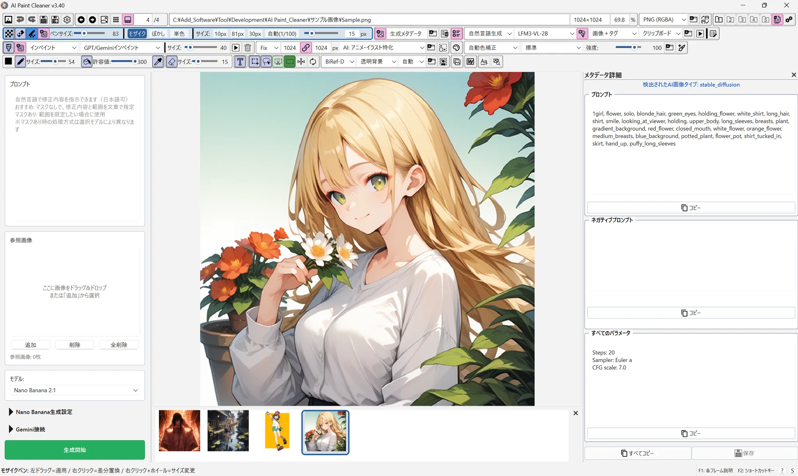

AI Paint Cleaner マニュアル
画像を開いて、範囲を指定して、処理して、保存する。モザイク・不要物の除去・背景除去・タグ生成まで、1つの画面で完結します。
- 1画像を開く左上のボタン、Ctrl+O、またはドラッグ＆ドロップ。
- 2機能を選ぶモザイク・修復/除去・背景除去など、目的の枠を選びます。
- 3範囲を指定して実行画像上をドラッグして範囲を指定し、Enter または ▶ で実行。
- 4保存するCtrl+S で上書き保存、Ctrl+Shift+S で名前を付けて保存。
画面マップ画面の枠をクリックすると、その場所の機能を確認できます。

ファイル・表示描画ツールサブツールパネル
- ファイル操作: 画像の読み込み・保存と設定。
- ページ操作: フォルダ内の画像を切り替える。
- 画像情報: ファイル名・画像サイズ・表示倍率。
- 画像形式の変換: PNG／JPG／WebP／PDFへの変換と圧縮。
- 選別＆ブックマーク: 画像をフォルダに振り分け、他のソフトで開く。
- モザイクツール: なぞった範囲にモザイク・ぼかし・単色塗り。
- メタデータツール: 生成メタデータの確認と削除。
- タグ・説明生成: 画像からタグや英語の説明文を生成。
- インペイントツール: マスクした範囲を消す・描き直す・元に戻す。
- リサイズ＆アップスケール: サイズ変更とAIアップスケール。
- 手動色調補正: 明るさ・色味をスライダーで調整。
- AI補正: 色・明るさ・ノイズ・ブレなどをAIで補正。
- ペイントツール: ペン・塗りつぶし・スポイト。
- 消しゴム: なぞった範囲を消す。
- 文字入れ: 文字やフキダシを配置。
- 選択ツール: 範囲を選んで移動・コピー・切り抜き・変形。
- 背景除去: 背景を透明・白・ぼかし・指定色に。
- 画像挿入: フキダシなどの素材をキャンバスへ。
- 透かし追加: 文字・画像の透かしを追加。
- ファイル整理: リネームと重複・類似画像の検索。
- インペイント設定: 選んだインペイントモデルの設定欄。
- キャンバス: 画像の表示と描画エリア。
- サムネイルバー: フォルダ内の画像を下部に一覧表示。
- メタデータ詳細: 生成画像のプロンプトやパラメーターを表示。
- ヘルプ: 各枠の説明とショートカット一覧。
機能から探す
画面と基本操作開く・保存・画像の切り替え・一覧表示・設定・ショートカット。
モザイクモザイク／ぼかし／単色。AutoMosaicの処理画像のプレビュー表示と、不要なモザイクの除去。
インペイントマスク範囲を消す・描き直す・元に戻す。軽量除去から生成AI・外部サービスまで。
ペイント・文字・選択ペン・塗りつぶし・消しゴム・文字入れ・範囲選択、画像挿入と透かし。
色調補正・AI補正スライダーでの手動補正と、ノイズ・ブレ・JPEG劣化などのAI補正。
背景除去AIで背景を透明・白・ぼかし・指定色に。前景除去や色置換も。
リサイズ・形式変換サイズ変更とAIアップスケール、PNG／JPG／WebP／PDFへの変換と圧縮。
メタデータAI生成情報の確認・編集・コピー・削除。
タグ・説明生成Danbooru形式のタグや英語の説明文を生成。学習データ作りのタグ一括編集も。
選別・ファイル整理フォルダへの振り分け、他ソフト連携、リネーム、重複・類似画像の検索。
基本操作
ボタンにカーソルを合わせるとツールチップが出ます。F1 で各枠の説明、F2 でショートカット一覧を表示できます。
| 操作 | マウス | キーボード |
|---|---|---|
| 描画・選択 | 左クリック | |
| 拡大縮小 | ホイール | |
| 画像の移動（パン） | 中ボタンドラッグ | Space＋左ドラッグ |
| 前／次の画像 | 戻る／進むボタン | ← / → |
| ツールの切り替え | 右クリック＋戻る／進む | ↑ / ↓ |
| インペイントのカテゴリ切替 | 左クリック＋戻る／進む | Ctrl＋↑ / ↓ |
| ツールサイズの変更 | 右クリック＋ホイール | |
| 全体表示／100%表示 | Alt＋0 / Ctrl＋0 | |
| 画像一覧の表示 | Ctrl＋L | |
| 開く／上書き保存 | ドラッグ＆ドロップ | Ctrl＋O / Ctrl＋S |
| 戻す／やり直す | Ctrl＋Z / Ctrl＋Y |
困ったとき
初回の処理に時間がかかる
背景除去・AI補正・タグ／説明生成・インペイントの各モデルは、初回実行時にダウンロードします。2回目以降は速くなります。
GPUが使われない／エラーになる
GPUドライバーを更新してください。対応しているのはNVIDIA GPUのみです。処理デバイスは設定から確認できます。
差分置換で意図した画像が選ばれない
参照先の指定方法を目的に合わせて変更してください（Ctrl+R で設定画面）。 詳しく見る →
削除や選別のたびに確認が出るのを止めたい
設定の「画像削除・選別時の確認を省略する」をONにしてください。
外部サービス（GPT／Gemini／NovelAI）が使えない
各サービスのAPIキーが必要です。サイドバーの「APIキー取得手順」から取得して登録してください。料金は各サービスの契約・利用条件によります。 詳しく見る →
不具合を見つけた
BOOTHのメッセージ ↗、メール、または不具合報告フォーム ↗からお知らせください。操作手順と画面がわかると修正が早くなります。
AutoMosaicと一緒に使う
AutoMosaicで処理した画像の確認・手直しに。モザイク箇所をプレビューで確かめ、不要なモザイクは右クリックでなぞるだけで元に戻せます。